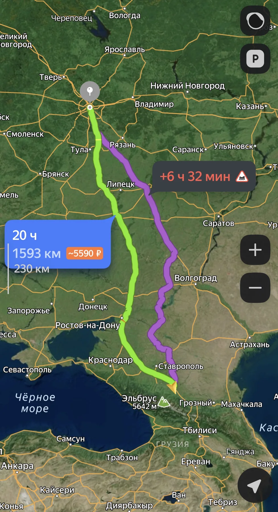

небольшой сайт для одного очень важного человека
Для Арины
Я мог бы написать просто «я тебя люблю». Но мне захотелось оставить тебе что-то, к чему можно вернуться и ещё раз почувствовать, насколько ты для меня особенная.
листай ниже ↓
Та самая девушка.
Шатенка с карими глазами, ростом 168 см — но для меня ты намного больше любых описаний. Самое красивое в тебе не помещается в цифры, цвет глаз или внешность. Это то, как ты говоришь, чувствуешь, смеёшься, переживаешь, поддерживаешь и остаёшься собой.

«я так долго ждал нашей встречи»